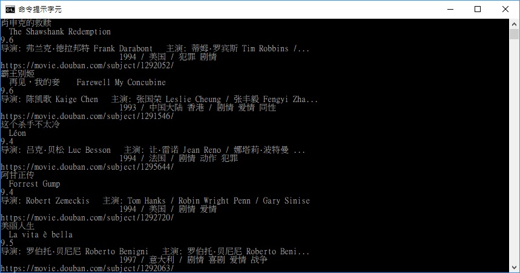
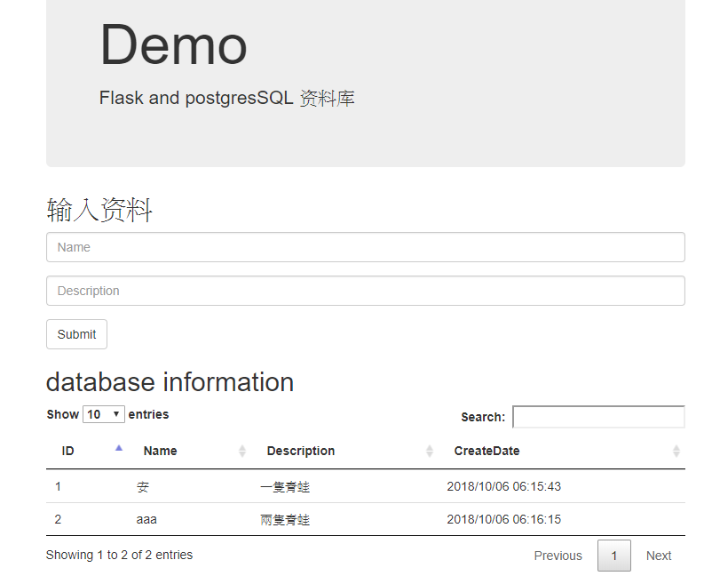

简历
- 个人资料
- 姓名：王建勋
- 性别：男
- 生日：1990.04.12
- 籍贯：台湾省
- 学历：全日制本科
- 现居城市：南宁
- 手机：14777232006
- 电邮：hugowang110@qq.com
个人评价
近4年软硬件及网络运维工作经验，熟练操作各类设备及系统，拥有良好职业操守；
且工作接洽多个部门及客户，沟通能力较强，团队合作能力好。近2年国外工作生活经验，英语沟通能力良好。
教育经历
2017/09-2018/07 台湾高雄python学院 python应用
2012/09-2013/09 台湾义务役兵役
2009/09-2012/07 台湾国立澎湖科技大学 资讯工程（计算机科学&信息技术）
工作经历
- 负责服务站点客户的计算机各类软、硬件故障的分析检测、处理修复；
- 负责对各类办公设备的安装与调试、故障的分析检测、处理修复；
- 协助公司进行电脑配件采购。
墨尔本pak computer公司（2015.10-2017.08）
担任职务：维修工程师
- 提供技术支持工作，完成终端测试解决方案的制定与实施；
- 设备的巡检和维护：定期前往客户现场对设备运行情况进行巡检，并根据故障进行更换备件或初始化的操作
- 对接客服及研发等部门，确认、复现、推动售后问题的解决；
- 收集各种线上、线下用户的信息反馈，整理客户关注问题的报告，确认关键售后问题原因，分析流程缺陷并推动制定改善措施
台湾言瑞开发科技股份有限公司（2013.11-2015.09）
担任职位：售后工程师
技能特长&语言能力
熟悉WINDOWS操作系统、网络系统、OFFICE办公软件安装及优化
熟悉办公硬件运维
熟悉Django,Flask开发网站后台网站维护
熟悉使用Mysql, Postgres, Mongodb的增删查改
透过修改Bootstrap模版自行增删网页功能，以及利用各种套件设计、美化网页。
Icons
作品
附：Github上爬虫实作作品
该作品是用於Python撰写的爬虫爬取电影资讯并整理资料制作成文档

附：Heroku云端平台建构实作作品
该作品是基于Python Flask网页框架并使用Bootstrap和Jquery美化网页，创建PostgresSQL资料库，并可以使用该资料库存取文档（右图为范例）
